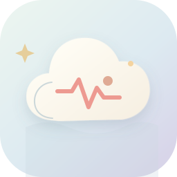

今日云层 · 轻轻的
有一小片困意
停在肩上
比平时多醒了 2 次，今天可以把节奏放慢一点。
给身体的小信号，
留一朵云的位置。

云朵收容所 CLOUD SHELTER11月1日 · 星期日
今日云层 · 轻轻的
比平时多醒了 2 次，今天可以把节奏放慢一点。
我会参考你的睡眠、心跳和最近心情。
答案会像一张便签，尽量短一点。
昨晚好像醒了好几次，今天有点没力气。
08:21我看见了。你昨晚比平时多醒了 2 次，安静心跳也比近 30 天平均高 3 bpm。 今天先不安排太满，午后晒 10 分钟太阳，会更容易把困意抖落。
跟云一起，一吸一呼
轻轻吸气
让云变大
短暂停留
停在云里
慢慢呼气
让云变轻
如果感到头晕或不适，请停止并恢复正常呼吸。
这周的云，偶尔有点重，
但你都有好好接住它。
入睡时间比上周晚了 17 分钟，但周末已经慢慢补回来。三次散步之后，你都说心情轻了一些。
最长的一次，沿河走了 28 分钟。
不必每晚都完美，已经很好。